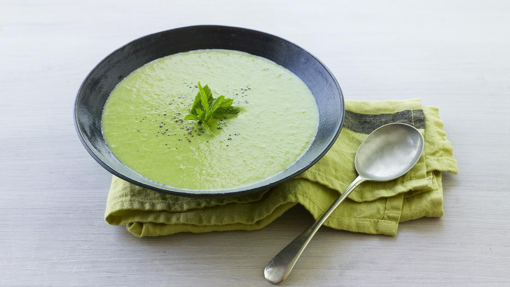

Pea Soup

Pea Soup
This easy pea soup recipe is one you'll make time and again when you're in a rush.
The recipe scales up easily and freezes well, so there's no reason not to make loads.
Ingredients
- 1 tbsp olive oil
- 1 garlic clove, chopped
- ½ onion, chopped
- 200g/7oz frozen peas
- 300ml/10fl oz chicken stock (vegetarians may substitute vegetable stock)
- 50ml/2fl oz double cream
- salt and freshly ground black pepper
- mint leaf, to garnish